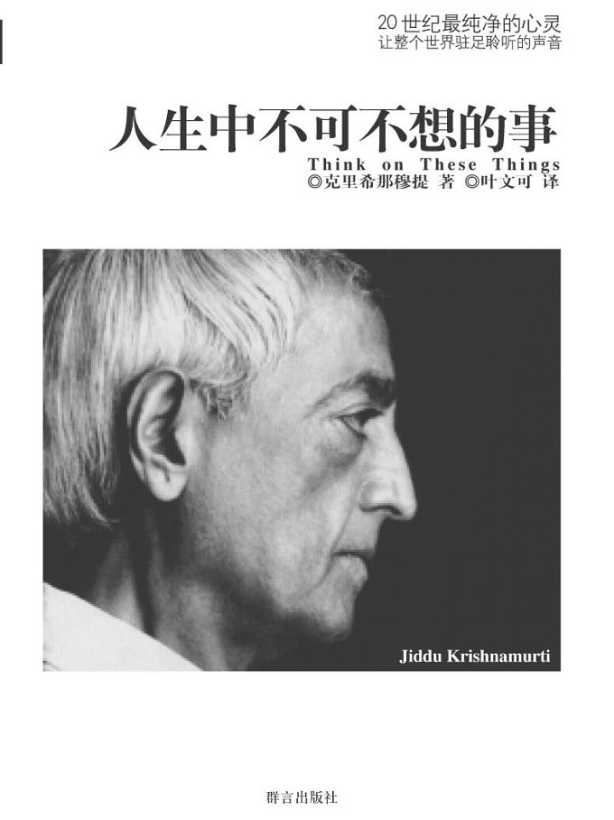

注：【】部分为笔者心得，非原文摘抄。
- 去了解生命本身，比只是准备考试、精通数学、物理或其它科目要重要多了。
- 你是否问过自己长大以后想做什么？最大的可能是你会结婚，在你还没有搞清楚自己的定位时，可能你已经是父亲或母亲了，然后你会被一份工作绑住，或是被厨房绑住，你就在这其中渐渐衰萎。这难道就是你所有的生命了吗？
- 教育的真正意义，难道不是培养你的智慧，借着它找出所有问题的答案？
- 智慧是一种无限的包容力，允许你自由地思想；没有恐惧，没有公式，然后你才能发现什么是真实的、正确的事物。
- 任何形式的野心，无论是精神的或是物质的，都导致焦虑和恐惧。野心不能带来清明、简单而直接的心智，所以是不可能有智慧的。
- 服从社会、父母及老师的教导是很容易的，那是安全又容易的生存之道，不过那并不是生活，因为在其中存有恐惧、腐败及死亡。
- 活着就是去探索什么是真相，只有在自由中才能做得到，或是当你的内心拥有永不停歇的革新时。
- 安全的生活通常代表的是模仿。
- 创造没有恐惧的气氛是一件多么伟大的事！
- 我们必须立刻创造出自由的气氛，你可以在其中生活并且探索什么是真相，然后你会变得有智慧、有能力面对及了解这个世界，而不只是顺服它。
- 只有那些不断革新的人，才会发现什么是真理，那些服从与跟随传统的人是无法做到这一点的。
- 了解问题而不空等答案是很重要的。
- 不要理所当然地认为这是一个有秩序的社会，不要被言语所麻醉。
- 当你不再有野心，不再汲汲营营，不再执著于安全感，才能迎接挑战，创造一个新的世界。
- 当你真的在学习，你是通过你的生活在学的，你没有任何特定的老师，没有哲学家，没有灵性导师。
- 对一件事深感兴趣才会专注。
- 如果你认识到你所提出的问题的重要性，你就会有兴趣想知道这件事的真相了。
- 教育应该帮助你了解你真正爱做的事是什么。你不知道你真正想做的是什么，你的心陷入一种例行公事，其中只有无聊、衰败及死亡。所以当你年轻时，找到你真正“爱”做的事是很重要的。
- 如果你觉得一件事既重要又有价值，你就会全心全意去做。
- 任何真正的革新，都是由少数看见真理，并且希望活在真理中的人所创造的。
- 真正的自由是一种精神状态，其中没有恐惧或勉强，没有求取安全感的冲动。
- 当你观察、注视、全神贯注于美好的事物时，你的心一定得远离先入为主的偏见；你的心一定不能被问题、烦恼及臆测所占据。只有在你的心非常安静时，你才能真正的观察。
- 你必须了解你的整个环境，也就是社会、宗教、父母及传统不断加给你的影响，你才开始有智慧。
- 一旦你想成为某某人物，你就不再自由。
- 教育的意义是要帮助你从孩提时代开始就不要去模仿任何人，永远都做你自己。
- 如果你认清真正的自己并且了解它，那么在这份深入的了解之中，你就开始蜕变了。
- 自由并不在那些想把自己变成不同的人身上，也不存在于做你碰巧想做的事，更不是跟随传统、父母或上师，而是在每一个刹那了解你自己是什么。
- 你的父母、你的老师以及你自己的欲望，都希望你认同一些事物，然后才能得到快乐及安全。但是如果你想要有智慧，就必须把这些捆绑你、碾压你的影响力破除。
- 有智慧的心是会永不停止学习、永远不下结论的。
- 一个满意于诠释的心是很浅薄的。
- 智慧产生于对自我的了解，你只能在面对各种的人事、想法中，才能了解自己。
- 如果我是愚笨的，而我想变得有智慧，这份想变得有智慧的努力，就是更大形式的愚蠢，因为最重要的是要去了解愚蠢是什么。
- 如何创造一个可以让孩子对自我产生了解的环境，这个问题牵涉所有人，包括父母、老师及孩子本身。
- 自我认知是不能勉强的，了解是不能被逼迫的。
- 如果某种经验被过去所混淆，充其量只是过去的延续，而不是原创的经验。
- 当你们和孩子相处时，重要的是你们不该把自己谬误的观念、自己对鬼怪的想法、自己特殊的意见及经验加在他们的身上。
- 制造一种气氛，是孩子可以在其中自在而无惧地成长。
- 你愈加仔细思考那些不容易懂的事，你就愈有能力过真正富足的生活。
- 接触新观念及你不熟悉的事物是非常重要的。看见美好的事物是很好的，但是你也必须观察生命中丑陋的事，你必须对万事万物都觉察。
- 自由并不仅止于做你喜欢的事，或是从外界的束缚中挣脱出来，而是先要了解什么是依赖。
- 有一种更深的依赖必须要认识清楚，才能获得自由。那就是，你总是依赖着别人给你快乐。
- 如果不了解自己为什么依赖，就不可能革新。除非我们了解并破除所有内心的依赖，否则我们永远不能自由。
- 自由与爱是并存的。
- 爱是不要求回报的，甚至不感觉你给予了什么，只有这种爱才能使你了解自由。
- 一定要找出爱的真谛，如果我们不能爱，我们就永远不可能深思、专心，我们也永远不可能体恤。
- 只有那些了解并消除内心依赖的人，才明白爱是什么，才能得到自由。只有这些人才能带来一个新的文明，不同的世界。
- 只有当你看见野心的腐化与败坏的本质时，你的野心才会消除。
- 一个错误的方法永远不可能用来达到正确的目标。
- 你受教去适应这个社会，然而这不是教育，只是一种过程，将你限制住去配合某个模式。
- 只有当你的心智单纯时，你才能了解如何去爱。
- 对自己不满就是羡慕别人的开始。
- 只有当老师和学生都知道如何思考时，学校才能名副其实。
- 只有当你如实观察自己而没有任何改变的欲望，也没有责难或比较满足就会降临。
- 当你不想某件事时，你才反抗并质问为什么必须做这件事。
- 如果我们觉得害羞就是对自己过度的关注。
- 真正地生活需要极大的爱，需要对寂静有很深的感受，需要有丰富的经验，却又保有赤子之心。它需要能够清楚思考的心智，不被偏见、迷信、期望或恐惧所捆绑。
- 是为了想听到可以符合自己想法的东西，还是为了发现真相而听？
- 如果你真的想要倾听，你的心自然会安静。
- （依靠外部的刺激）你也许会得到享乐，找到新的满足，但你迟早会厌倦。
- 如果你努力求取快乐，快乐不会降临，这就是快乐最大的秘密。
- 快乐出自于纯真，出自于可爱的存在本身。
- 真理不是依葫芦画瓢便能获得。
- 要得到快乐，你必须懂得让你的心远离恐惧。
- 如果你没有被教会如何去生活，那么教育根本是没有意义的。
- 【不要被思维固化的人左右了自己的思想。】
- 一旦你观察到什么不是宗教，那么，终其一生就没有任何传教士或书本能欺骗你，没有任何恐惧再造出幻觉，是你迷信与盲从。
- 真正的教育是教导你“如何”去思考，而不是教你去思考“什么”。
- 我们到庙里去膜拜什么？一个象征意义的形象。但是象征的形象并不是真相。
- 年长的人把象征的东西变成宗教，然后在其中互相争执、打斗、诽谤，可是上帝并不在那儿。
- 盲目的信仰使人类分裂。
- 【随大溜一个很大的弊端就是你忘记了自己是个独立的个体。】
- 如果你能从年轻时就革新，在你年长时，还能保持你的不满，并带着喜悦的活力及深挚的情感，那么你不满的火焰就会带来不寻常的意义。
- 只有从真正的不满之中，才有创新的才能。
- 缺少了不满，就永远不会有主动创造的才能。
- 要寻找真理，一定要对旧有的秩序做一番革新。
- 具有创造力的境界就是上帝。
- 完全不知道不满的人，他们的精神早已死了。
- 心如果不再追求任何形式的安全保障，不再被恐惧所捆绑，你就能够清楚、简单而直接地思考了。
- 我们一旦不再盲目接受或跟随，而是不断质问、研究、透视，在其中就会产生洞察力，继而产生创造力和喜悦。
- 受教育的重点就是学习独立，然后你才会不被群众的意愿或是某个人的愿望所左右。如此你才有能力去发现什么是真理。
- 如果你缺少了深切的爱，你就永远不能看到整体生命。
- 大部分人只执著于人生的一小部分，以为从那一小部分就可以发现整体。
- 教育应该帮助你了解完整的人生，不只是为你准备一份工作，然后顺着常规步入婚姻、生育儿女、付保险费、做祭供、信仰小神明等。
- 要得到内心的富足，必须先知道放下不重要的东西。
- 【用无分别心去面对事物，自己去领悟它的美与丑、真与假。】
- 一旦具备了对万事万物的敏感，就能开始工作及助人，而不是拒绝和责难。
- 只有当一切的竞争都除去时，才会产生一个和平的社会，大家才能过得快乐而又有创造力。
- 我们希望得到一个没有剥削或极权的完美社会，但是缺少了爱，这个理想就一点意义都没有了。
- 如果你害怕不能赚钱谋生，或不能适应这个腐败的社会，那么你永远都不会弄清楚到底你爱什么。
- 教育的基本意义之一，就是帮助你弄清楚自己真正爱做的是什么事。
- 有开明的老师以及健康的教育气氛是非常重要的，然后你才能随着展现于你所做的事情上的爱，慢慢成长。
- 你必须独立地、清楚地、没有偏见地思考，因为真理不在生活之外，它就在你每天生活的每个行动之中。
- 长辈会告诉你照着他们的看法去做就是你的责任，而他们的看法却总是局限在自己的背景、传统等当中。
- 你不会对佣人或乡下人表示尊敬，你只尊敬那些你希望从他们身上获得什么的人。这种尊敬其实是恐惧，根本不是尊敬。
- 你有美德，你的思想就会精确，你整个人就有条理，这就是美德的功用。
- 【学会活得从容，而不是比别人好。】
- 【妄念生烦恼。】
- 所谓的知识分子就是有肤浅的小聪明的人，用各种辞藻和理论来讨论人间的是是非非和什么该做，什么不该做的人。
- 只有内在的品质才能带来的真正的行动，真正的行动不是依据观念而产生的。
- 不要和仇恨的感觉作战，不要说恨人是多么糟的事，只要观察恨是什么，然后把它丢掉。漠视它的存在，它是不重要的，重要的是别让恨在你的心中生根。
- 如果你为快乐而追求快乐，就是没有意义的。快乐是不请自来的，你一旦察觉到自己正在快乐，你已经不快乐了。
- 必须放下自我以及对快乐的要求，快乐才会来临。
- 真正的生活就是全心全意做你喜爱的事，没有任何矛盾，不必在你所做的事及你必须做的事之间交战。
- 如果你没有偏见、没有歧视，如果你是完全开放的，那么所有环绕你的事物都会变得非常有趣、非常活泼。
- 如果对周遭一切事物保持敏感，才能开始进行不同方式的思考，这种思考方式永远不会被我们的条件限制。
- 只有在我们是全然地活着，非常机敏、警醒，充满观察力，对周遭一切都有兴趣，我们才能发现什么是真正的快乐。
- 不要让你的偏见蒙蔽了你对事物真相的观察。
- 如果你的心中没有爱，生命的意义就很小了。
- 心不能被特定的信仰、恐惧及数不清的欲望阻塞，只有这样的心智才有能力做真正的思考、探索及发现真相。
- 安稳并不重要，重要的是去了解并突破你的环境，从中你自然会得到安稳。
- 寻找快乐是件很荒谬的事，因为只有在你不去寻求它时，它才存在。
- 当你不再骄傲、虚荣时，谦卑便自然升起了。
- 当妨碍快乐的事物消失时，当焦虑、沮丧以及对个人安全感的追求停止时，快乐就自动出现了。
- 表达想法及感觉是很重要的，表达得如何反而不重要。
- 我们很少在长大以后还时常哭泣的，因为我们失去了童心那份不平凡的易感。但是悲伤不只因为失去东西，它不是被阻止或沮丧的感觉，而是更深刻的感受。
- 内在的统一是最难得到的，因为它代表着你整个人完全统合，包括你所有的言行举止及思想。
- 如果你的心能容纳无限的经验，虽然饱经世故，却又能维持单纯，这才是朴素。
- 美是超越知觉的。
- 内心如果没有创意的美，你的才能就没有太大的意义。
- 具有内心的素朴，一种极为简单的心境，才能放下自我。
- 只有在你能放下时，才可能有创造力。
- 象征就如同你走在太阳下的影子。影子不是你，这些庙里的象征不是神，也不是真理。
- 如果一个人寻求的是真正的神，他会避开庙宇，因为庙宇使人类分裂。
- 恐惧啮噬着你的心，只要有恐惧，就没有喜乐，没有创造力。
- 实相是要直接契入的，连方法都要放下，不管是基督教还是印度教，只要落入宗教形式，就不能契入实相。
- 真正的反叛、真正的革新，乃是突破旧有的模式，向模式外去搜寻答案。
- 了解心智如何运作，就是教育的基本目的。
- 突破传统及权威的围墙，把约束思想的限制都落，只有这样才是真正的教育。
- 在我们与别人之间永远有意见的屏障，所以我们永远看不到别人的真相。
- 永远以清新的心去结识别人。
- 感受到美而不加入意见，是唯一真正对美的了悟。
- 如果你能突破你所属的社会的牢墙，你会得到不被傲慢污染的天真，这就是天真的信心。
- 因为你是真正天真的，所以你具有信心。
- 单独生活需要极大的智慧，而你必须独处才能发现真理。
- 在自由的气氛中才有爱，每个人才会感觉到极大的信心。一旦你觉得完全自在与安心，信心就来了。
- 正确教育的真正作用是要帮助你成为有生命力而又敏感的人，成为一个心无恐惧，不因为身份地位而对人产生错误尊敬的人。
- 考试是有止境的，但学习没有止境，如果你的心是好奇的、机敏的，你就能从万事万物中学习。
- 【不要成为习惯的奴隶。】
- 大部分人的心智永远都在惯性的模式中活动，而年长后这会变得更糟。
- 因为想改变自己，变得和别人一样，所以嫉妒就产生了。
- 任何社会、教会或宗教组织里玩弄权术的人，都可以说是邪恶的，因为他们自己还没弄清楚人生的方向，就要去控制、塑造并且领导他人。
- 真正的合作不仅是协议共同完成一项计划，也是怀着愉悦和一体的感受。这份感受中，没有执著的个人理念或个人的意见。
- 有引诱就没有真正的合作。
- 一旦认识了合作，你同时会知道什么时候不该合作。
- 合作精神不仅是计划或协议促使我们一块儿工作，而是众人一体的不寻常感受，一种完全没有奖励或处罚的想法，只是愉快地在一起和一起工作的感受。
- 如果我们不够智慧，我们就可能与不够智慧而有野心的领导者合作。
- 只有在我们认识了真正合作的喜悦后，才能知道什么时候不该合作。
- 一颗被占据的心，是没有能力解决任何问题的。
- 如果你不认识自己，你就是最愚笨的人。
- 突然看到真实的自己是一种新发现，包括看到自己的贪婪、好辩、愤怒、羡妒、愚笨。
- 自知之明是智慧的开端，在其中包藏着整个宇宙，也包含了人性所有的挣扎。
- 一旦你依赖某个人或某个观念来激励自己，你必定会产生恐惧，因此这根本不是真正的激励。
- 如果你顺从父母的意愿，只因为你认定那是你的责任，那么你的顺从只是市场上的交易行为，而没有真实的意义，因为其中并没有爱。
- 因为恐惧而屈服于别人需求的人永远不可能如愿。
- 如果你真的敢不同于流俗，你就是独立的人，生命就会如愿。
- 如果我们时时刻刻都能将过去的意念止息，我们的心就能保持清新，而不会腐败，或被黑暗的思绪所吞没。
- 人心渴望安全，不愿受干扰，所以它喜欢模仿。
- 只有真相才能使你解脱，带给你自由。寻找得到自由的方法，并不能给你真正的自由。
- 人一旦觉察到自己是迟钝的、愚笨的，并开始检视与了解自己的愚钝，这时候他的聪明就被唤醒了。
- 贪婪永远不会因为你试图去变得不贪婪而停止的。
- 一旦习惯于某件事情，你的心就已经迈向了坟墓。
- 完美的境界是无法预谋的，它是恒变而无持续性的，因此你无法计划，也找不到方法可以使它永恒。
- 能停止戏弄别人就是体贴的行为。
- 人类真正该做的工作是发现真理，是去爱，而不是被自己划定自限的活动所束缚。
- 有野心的人是最不快乐的。
- 如果你的心中有空间，那么在那个空间里必定有寂静的存在。只有在寂静中，你才能真正倾听。
- 如果你能弄清楚专心到底是什么意思，也许学习这件事会变得简单许多，并且会有不同的意义。
- 专注是一种缩小的过程，其实也是一种排斥的过程。
- 一个人如果对自己的心没有觉察的能力，不能了解内心微妙的活动，这样的心才是懒惰的、无知的。
- 如果不能了解自己，而只是一味地想改造自己，是毫无意义的。
- 最难的一件事就是让人心从已知的事物中解脱，使它能随时发现新的事物。
- 如果改变调皮的孩子只不过想让他不在调皮，那么这种改变他的欲望就是强迫。
- 如果他变成你认为应该的样子，他不过是限制了他真正的自我，因此根本不算是改变。
- 必须明白自己的心智是如何运作的，然后才能得到完全的专注。
- 缺少了内心的善意，这一切美的外在附属品就只能带来付钱的、世故的生活，是一种没有多大意义的生活。
- 只有内在的美才能带来优雅的气质，如果缺少了它，人生就变得十分浅薄。
- 哀伤是欲望的阴影。
- 如果你对你选择的事情并不真的信服，在做它的时候也不感觉快乐与自在，实现它才会变得如此艰难。
- 伟大的事都是从宁静的心中诞生的，而宁静的心绝不是从努力、控制与规范之中产生的。
- 一个默默无闻的人，他不想变成任何人物，他只是做他自己，并且真的了解自己，这种人就是摆脱傲慢和自大的人。
- 只有在没有任何动机和诱因的状况下，你才会为了爱而学习，也只有这种学习才是真的学习。
- 只有超越所有的信仰，超越所有的不同点及相同点，我们才能得到自由。
- 你的心中一旦有了爱这个惊人的东西，如果你能感受到它的深度、愉悦和狂喜，你就会发现这个世界会因为你而改变。
- 敏感就是能够体会别人的感觉。
- 心中有爱是人生中最伟大的一件事。
- 我们是空虚的、无聊的、悲哀的，在心理上，我们都是乞丐，不断追求别人或别的事物来填补我们的不足，来给我们希望，来支持我们。
- 意见不代表真理。因此不要光听别人的意见，不管别人怎么说，你都必须自己发现真相。
- 如果你的心是扭曲的，你就永远无法诚实地看事情；如果你的心是有限的，你就不能觉察到无限。
- 如果你只是告诉自己不要去做某些事，行动上依然如故，你就是虚伪的人。
- 如果你能了解孤独并且超越它，你就会发现根本不需要逃避它，于是也就不再有那种追求满足和娱乐的冲动了。
- 无聊起因于孤独。
- 大部分的人结婚或寻求其它种类的社会关系，是因为他们不知道如何单独去活。
- 孤独是一种完全与外界切断、没有明显理由而突然非常害怕的感觉。
- 【教育最起码应该教会学生对生命的尊重。】
- 大部分的成年人都还无法解决自己生活中的问题，而他们却对你说：“我来告诉你什么是实际，什么是不实际。”
- 如果我们不了解活着最大的目的就是解放我们的心智去找寻真理的话，这股能量就会变得具有破坏性。
- 如果规范能为人类带来更大的活力，那么它就是有价值的，有意义的，但是如果它只能压抑人类的活动，它就是非常具有破坏性的。
- 最美好的以及最具破坏性的品质，都是人类活力的展现。
- 冥想就是了解自己意念运作的过程。
- 如果没有思想，经验者就根本不存在了。
- 快乐是一项副产品，只有当你的心中有了善、爱，祛除了野心而又能寂静地追寻真理时，快乐才能来到。
- 人只要缺乏自知之明，就会制造对立。
- 如果我们每个人都能了解奋斗以及冲突所带来的问题，那么我们就能毫不费力地、快乐地生活。
- 我们的困难就在于自己常觉得不如别人，因此就要奋力去变成某某人物，或是努力克服各种自相矛盾的欲望。
- 当我们挣扎时，起因总是来自真实的自己和期望中的自己之间的冲突。
- 有智慧的人真正关心的是看清真相以及了解问题，而不是从成功或失败的角度来思考的。
- 只有在我们并不是真的爱自己所做的事情时，我们才会以成功或失败的观点来考虑事情。
- 如果你能看到事实，没有任何非难或赞同的感觉，你就会发现在这种观察之下，你的心与事实之间的障碍就去除了。
- 你希望被爱，因为你的心中没有爱。
- 只要我们的心期待被填满，它就永远是空虚的，当人心不再想要填满它的空洞时，这个空洞才会消失。
- 一个有独立思考能力的人，他发现真理并且护持它，无论生命带来的是不幸或快乐都不受影响，这样才能加强个性。
- 真正的问题不在于什么样的或什么程度的改革才是必需的，问题在于我们是否能达到一种不再带来更多问题和更进一步改革的革新。
- 教育最应该注重的，就是帮助学生发现真理，而不仅只是帮助他去适应既有的社会模式。
- 发现你真正爱做的事，需要很深的专注力及洞察力。不要从谋生的角度来开始做一件事，如果你发现了自己爱做的事，你自然就会得到谋生的工具。